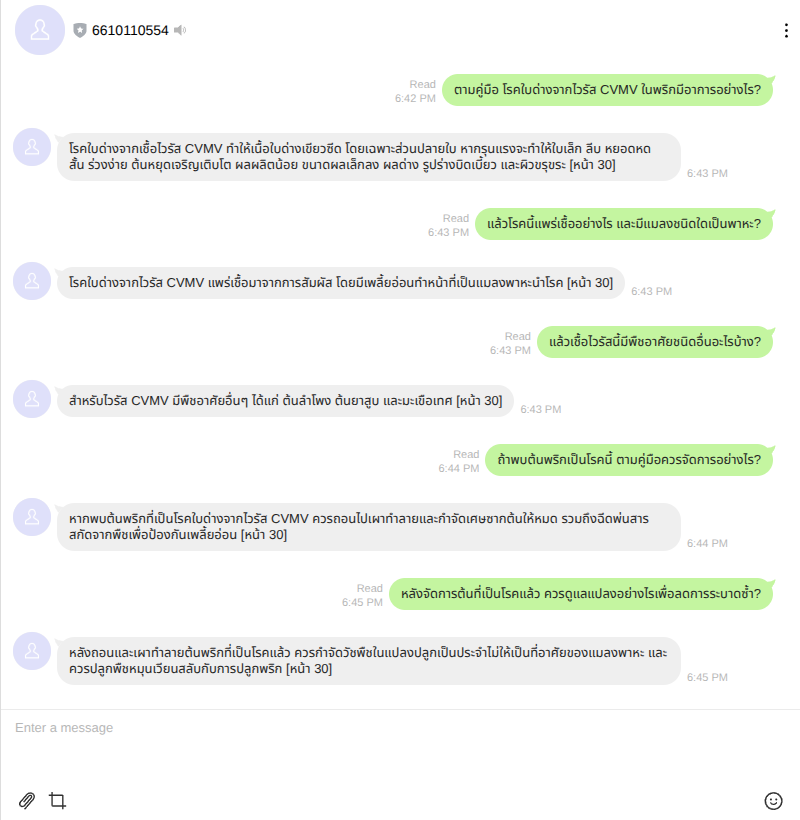

โรคใบด่างจากไวรัส CVMV ในพริก · คู่มือกำจัดศัตรูพืช หน้า 30
บอต 6610110554 · 12 กันยายน 2569 · ภาพจากส่วนขยาย LINE ใน Brave จริง

ระบบใช้ประวัติ 0, 2, 4, 6, 6 ข้อความตามลำดับ เพื่อเข้าใจคำถามที่อ้างถึงบริบทเดิม
หมายเหตุ: ข้อ 1 บอตสะกด “หยอดหด” คลาดเคลื่อนจากต้นฉบับ “ใบยอดหด”; ภาพคงคำตอบจริง